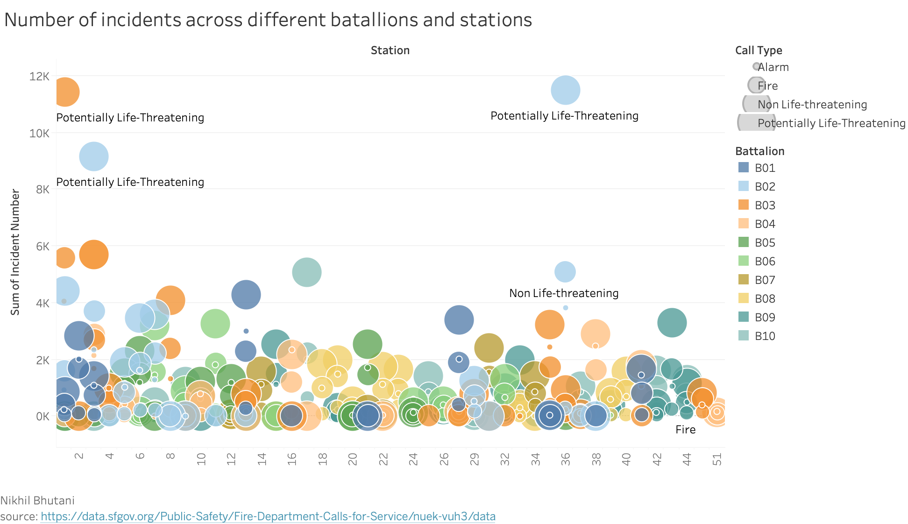
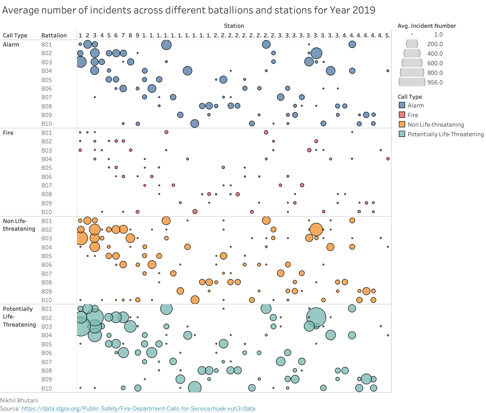

Prototype 2 - Average Number of Incidents across different Batallions and Stations
Nikhil Bhutani
Wrangling specific to prototype
Filtered By: Batallion not "B99", Year 2019, Station Area not null, Call Type Group not null and City is "San Francisco" Grouping By: Batallion, Station Area, Call Type Group Aggregated By: Average Incident Number(count of incidents for each month for a battalion and station / no. of months per year(12))(rounded to 2 decimal places)
Tableau Prototype(Beta Release)
Tableau Prototype(Final Release)
D3 Implementation
Average number of incidents across different batallions and stations for Year 2019 and San Francisco city
Nikhil Bhutani
Source:
Peer Review Feedback
- The use of size to encode type of call is confusing. It seems to encode the number of calls, but is not. Also the use of a paired color scheme gives the impression that some battalions are related. Also it is hard to understand which neighborhood each station serves.
- Having so many colors gets a bit overwhelming and makes it a bit difficult to properly see the data. The number of incidents also can be reliant on population for the neighborhood that battalion serves, so maybe a ratio would be better for lie factor rather than raw count. The labels included don't seem to add much to the visualization right now. Otherwise, this is a good visualization and can be improved with some tweaks and interactivity.
- I think making Call Type displayed by circle size is a little confusing. Also Station numbers kind of lack information/content like location.
- data density if very high, data-ink ratio high.
- A reccomendation I have for this one is to have the ability to filter by batallion so that we can see a less crowded version and make conclusions on the data separately.
- differentiating call type group by size is difficult. There are a lot of overlapping bubbles near the bubble which might make it difficult to fond some data. the interactivity for it might solve that problem though.
- there is a lot of colors and a lot of overlapping data. I think when working on interactivity remember this. Could be smart to use foreground vs background to show all data points with interactivity. For the labels under the values not totally sure if necessary because you have the legend already. Otherwise good job, look forward to seeing what the finish product comes out to.
Data Encoding and Interpretation
Battalion vs Station Numbers. Colour shows different call type groups. The size shows the incident number count. The x axis(vertical axis) is represented by station numbers and y axis(horizontal axis) is represented by batallions.
The bigger circle size means that there are more number of incidents reported in that respective batallion and its corresponding station.
Conclusion based on the prototype
For year 2019, most active batallion is "B02" and station is "36" with most number of incidents and the incidents are of type "Potentionally Life-Threatening".
Interactivity for the Visualization
Following interactivities has been implemented for the visualization:
- Highlighting all the circles related to a particular battalion accross different call type groups if one of the circle of a batallion is hovered on i.e. fading all of the circles belonging to other batallions.
- On demand data display i.e. when a user hovers on a circle then a tool tip pops up with specific details of the data. The details includes batallion, station number , station area, and call type group it belongs to.
How this visualization supports the theme?
Visualization helps in analysing the most active/busiest batallion and station and what type of incidents do they receive the most.